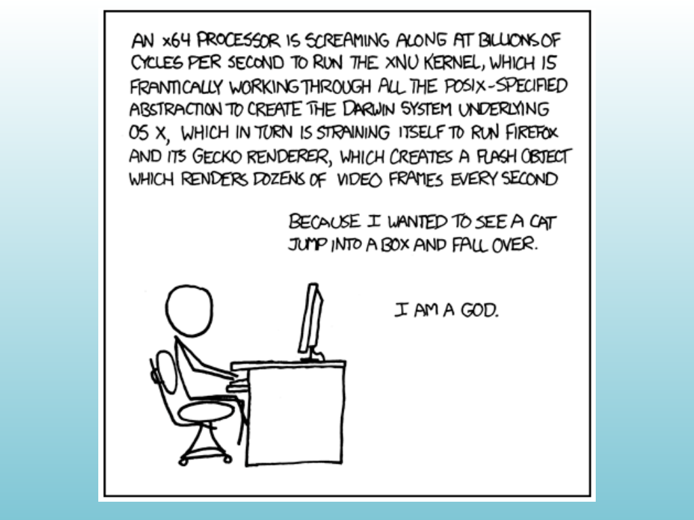
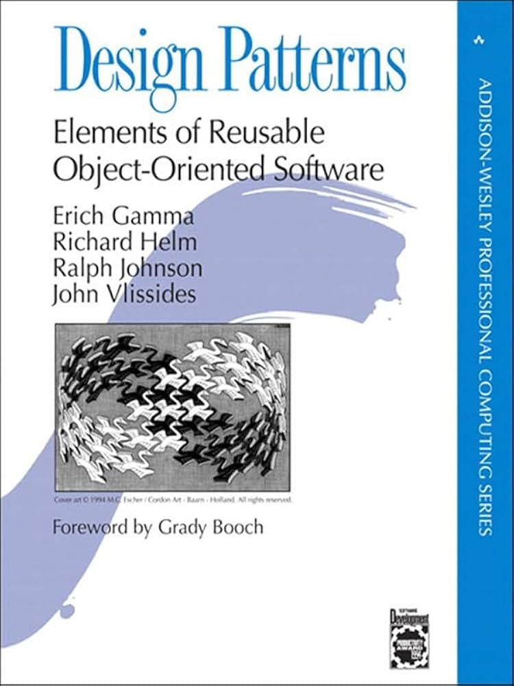
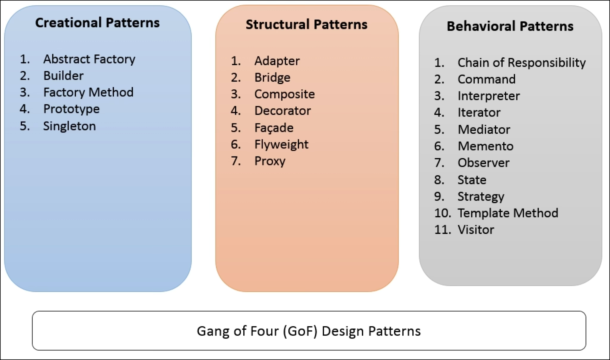
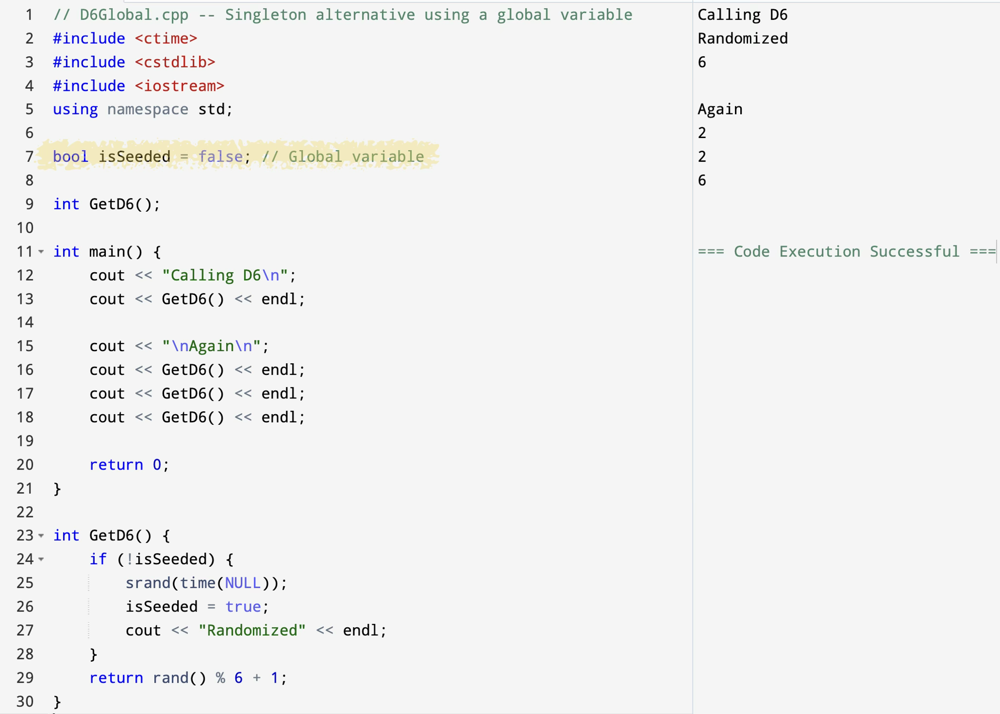
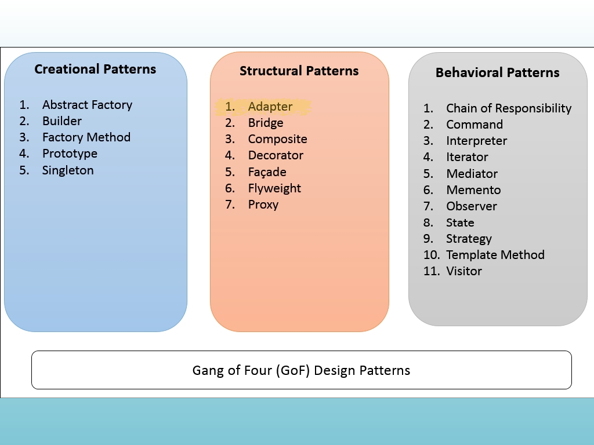
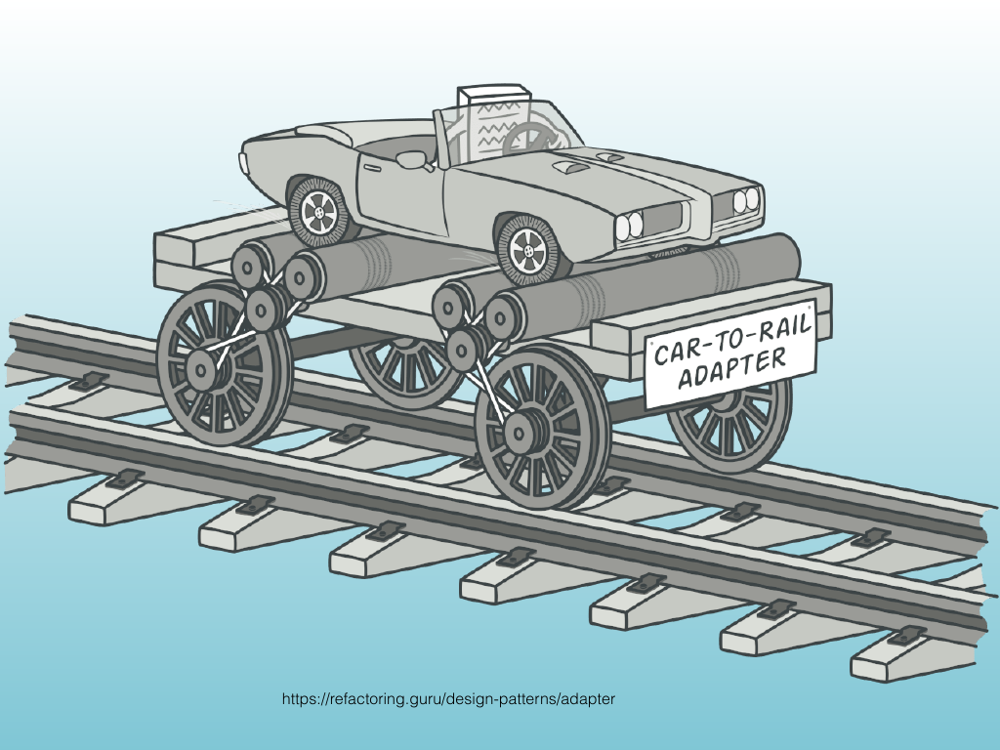
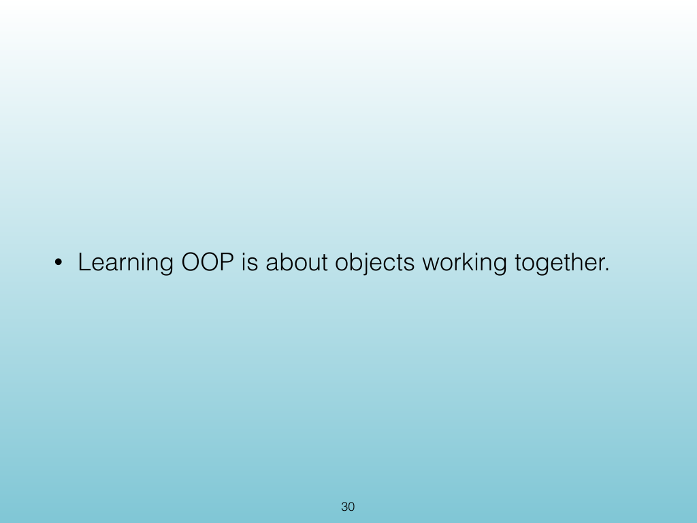
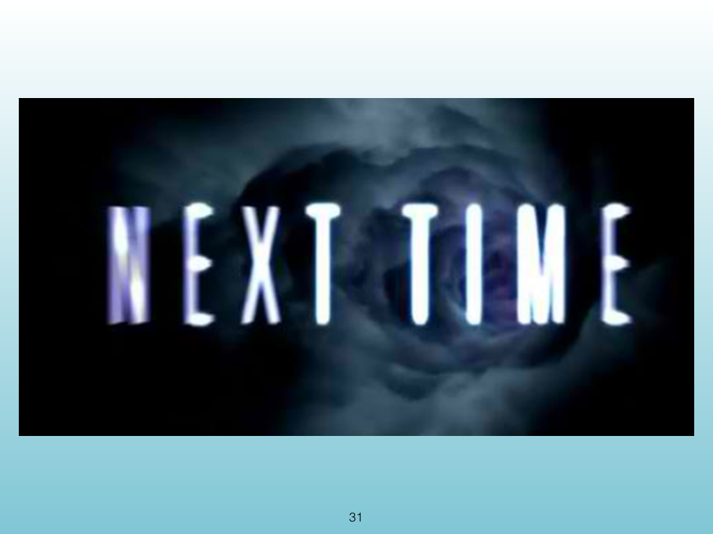
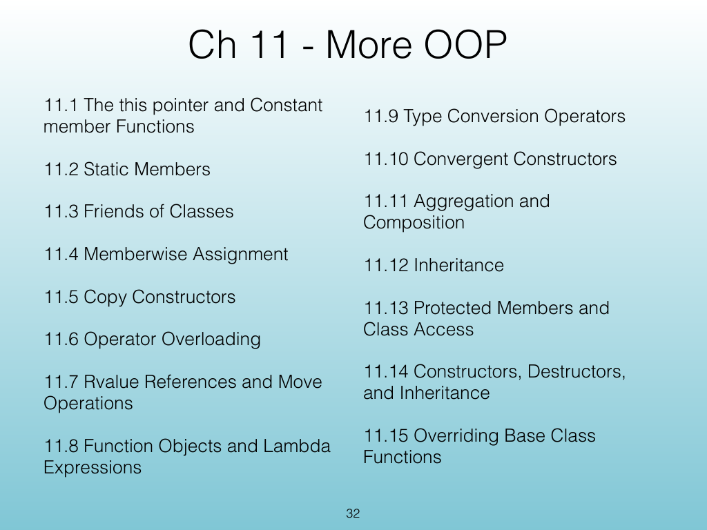
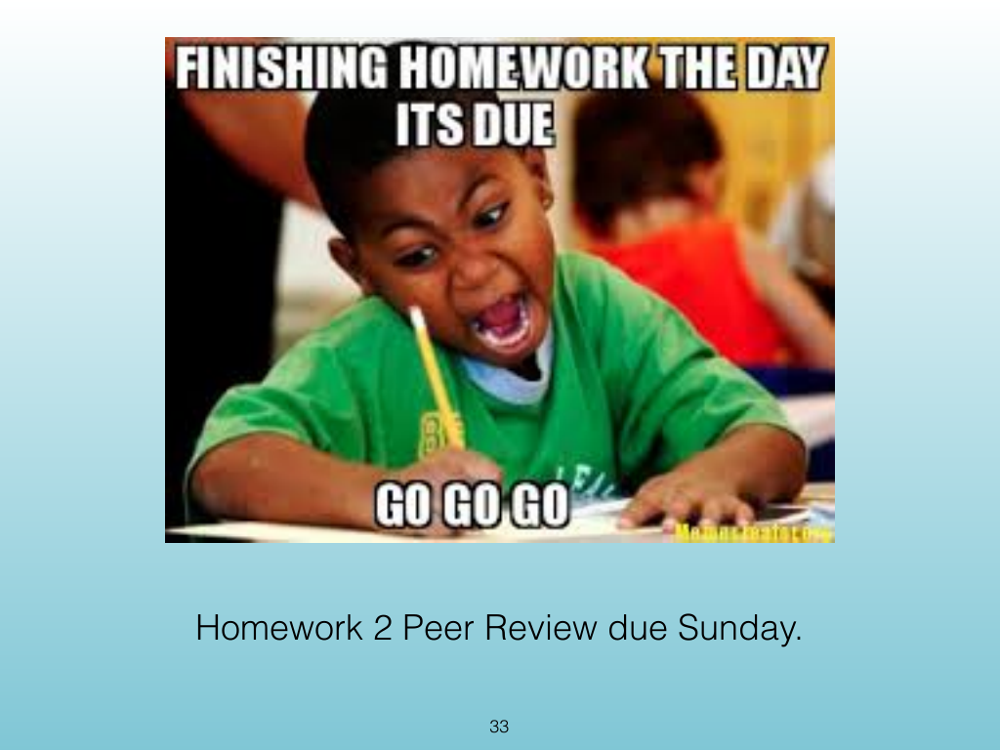

CISP 400 Object-Oriented Programming
C++
Course Framing
Source Slide 2

Last Time
- Relationships
- Arrays of Objects on the Stack and Heap
- Resource Acquisition Is Initialization
Agenda
- Topic 2 — Anonymous Classes and Objects
- Topic 3 — Design Patterns
- Topic 4 — Singleton Pattern
- Topic 5 — Adapter Pattern
Anonymous Classes and Objects
Anonymous Entities
Object-oriented programs are built from classes whose objects interact. A program may use several source files to represent those objects and their relationships.
Date1.cppDate2.cppDate3.cpp
Sometimes we do not want to incur the overhead of constructing an object and having it survive for a significant amount of time.
Anonymous Classes & Objects
- Anonymous classes have no class name; their objects may still have variable names and scope.
- Anonymous objects have no variable name; they are created, used, and destroyed immediately.
Anonymous Classes
- An anonymous class does not have a class name.
- An anonymous class cannot be used in functions or methods.
- Its objects do have variable names, so they can be called and have scope.
Anonymous Class Example
The class has no name, but it creates the named objects point1 and point2.
Anonymous Objects
Sometimes we do not want to incur the overhead of constructing an object and having it survive for any length of time.
Anonymous Object Example
An anonymous object has no variable name. It is created, used, and destroyed immediately.
Anonymous Object Output
The Printer object exists only for the constructor call. After the statement completes, the temporary object is destroyed.
Anonymous Object
- An anonymous object does not have a variable name.
- We cannot make multiple instances of that specific object.
- It can be used in functions or methods.
- We use it where we need it, for a short-lived operation.
Design Patterns
Why Name Solutions?
- Programmers run into the same design problems again and again.
- A shared name lets a team discuss the shape of a solution without redrawing it from scratch.
Christopher Alexander
- Architect Christopher Alexander wrote about recurring design problems in buildings and towns.
- His patterns described problems, forces, and reusable solution shapes.
- The idea was not “copy this building”; it was “recognize this design situation.”
A Pattern Language
- Alexander’s larger idea was a connected vocabulary of design choices.
- Small patterns and large patterns could work together.
- The value came from communication as much as construction.

From Buildings to Software
- Software also has recurring design problems.
- The exact code changes from program to program.
- The design shape can still be recognized, discussed, and reused.
The Gang of Four Book
- The Gang of Four book popularized software design patterns.
- The authors are Erich Gamma, Richard Helm, Ralph Johnson, and John Vlissides.
- They are often called the Gang of Four.

What Is a Design Pattern?
- A design pattern is a reusable approach to a recurring design problem.
- It names the problem, the structure, and the tradeoff.
- The pattern is about intent, not memorized code.
What Patterns Are Not
- Patterns are not syntax rules.
- Patterns are not libraries.
- Patterns are not guaranteed best practices.
- Patterns are design vocabulary with consequences.
Pattern, Not Recipe
- A recipe gives exact steps.
- A pattern gives a shape that must be adapted to the program.
- The same pattern may look different in small, medium, and large programs.
The Three Questions
- What problem does this pattern solve?
- What structure does it use?
- What tradeoff does it introduce?
Common Practices
- Start with the problem, not the pattern name.
- Use the smallest structure that makes the design clearer.
- Avoid adding pattern machinery when ordinary code is enough.
Pattern Categories

Summary
- Design patterns name recurring design choices.
- They help programmers recognize, explain, and maintain structure.
- Every pattern also has a cost.
Singleton Pattern
Pattern Category
What If There Should Only Be One?
- Some program resources should not have many independent copies.
- A file name, counter, settings value, or shared output path may need one controlled access point.
Singleton Pattern
- Singleton controls access so a program uses one shared resource.
- The program reaches that resource through one function.
- Other code asks for the shared resource instead of creating separate copies.
One Resource, One Access Point
| Rule | Meaning |
|---|---|
| one resource | the program should not create several copies of the same resource |
| controlled access | other code reaches the resource through one function |
| shared state | callers see the same stored data |
Example

Example 2

Why Static Shows Up Here
- The local
staticvalue is created once. - Each later call reaches the same stored value.
- The value is kept inside the access function’s control.
When Singleton Is a Bad Fit
- The data could be passed as a parameter.
- The program may need multiple versions later.
- The shared value changes in ways callers cannot easily see.
Common Practices
- Use Singleton only when one shared resource is part of the problem.
- Keep the shared resource small and focused.
- Do not use Singleton as a disguised global variable.
Summary
- Singleton controls access to one shared resource.
- It is useful when the single-resource rule is intentional.
- It should be chosen for a design reason, not convenience alone.
Adapter Pattern
Use Case
Suppose we create a Whizbang class that performs impressive processing on multimedia files.
- To use it, we send a multimedia file to a
Whizbangobject. - But multimedia files come in many formats.
- How many different file-specific interfaces would
Whizbangneed to support?
Whizbang Example
#include <iostream>
using namespace std;
class Whizbang {
public:
Whizbang(PDF& in) {
// Process a multimedia file.
}
Whizbang(MP3& in) {
// Process a multimedia file.
}
};
int main() {
PDF myPDF; // Supplier object.
MP3 myMP3;
Whizbang processPDF(myPDF); // Client object.
Whizbang processMP3(myMP3);
return 0;
}The client and supplier types become coupled to every constructor overload that Whizbang must support.
Adapters
An adapter lets an existing client work with an object whose interface does not match what the client expects.
Adapter
- Bridges the gap between one object format and another.
- Is usually temporary and often used for one specific interaction.
- Converts an existing interface without requiring the client or supplier to be rewritten.
Pattern Language
Christopher Alexander described recurring design problems in buildings and towns as patterns.
- A pattern identifies a recurring problem.
- It describes the forces that shape the problem.
- It gives a reusable solution shape rather than a fixed construction recipe.
Design Patterns
The Gang of Four book popularized design patterns for object-oriented software.
- Erich Gamma
- Richard Helm
- Ralph Johnson
- John Vlissides
The authors are commonly called the Gang of Four.
Pattern Categories
The Gang of Four organizes patterns into three broad categories.
| Creational | Structural | Behavioral |
|---|---|---|
| Abstract Factory | Adapter | Chain of Responsibility |
| Builder | Bridge | Command |
| Factory Method | Composite | Interpreter |
| Prototype | Decorator | Iterator |
| Singleton | Facade | Mediator |
| Flyweight | Memento | |
| Proxy | Observer | |
| State | ||
| Strategy | ||
| Template Method | ||
| Visitor |
Adapter in the Structural Category
Adapter is a structural pattern because it changes how existing objects connect without changing their internal implementations.

Adapter appears among the structural patterns.
Adapting the Interface
The adapter acts like a connector between incompatible interfaces: the client uses the interface it already knows, while the adapter translates the request for the supplier.

A car-to-rail adapter illustrates one interface being converted to another.
Back to Whizbang
- We no longer need a large set of multimedia-specific types built into
Whizbang. - Instead, we accept one relatively broad type.
- Each adapter converts a supplier object to that type.
Named Adapter Class
#include <iostream>
using namespace std;
class Whizbang {
public:
Whizbang(string& in) {
// Process a multimedia file.
}
};
class PDF2String {
public:
PDF2String(PDF& in) {
cout << "Convert PDF to string" << endl;
}
};
int main() {
PDF myPDF; // Supplier object.
Whizbang processPDF(PDF2String(myPDF));
return 0;
}The named adapter converts a PDF into the representation expected by Whizbang.
Anonymous Adapter Class
An anonymous adapter object can be created when the conversion is needed without giving the adapter class a reusable name.
Named Adapter Object
The named object makes the conversion step explicit and can be reused for additional calls.
Lecture Wrap-Up
Source Slide 30

Source Slide 31

Source Slide 32

Source Slide 33

CISP 400 · Fowler